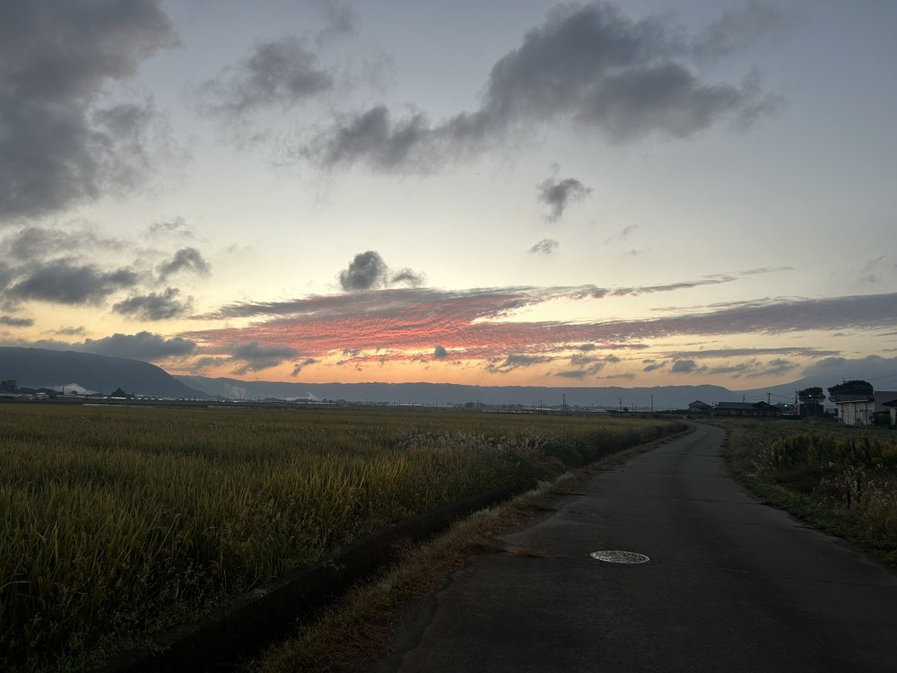

昨日（10月22日）の朝、6時を少し過ぎたころ、いつもの散歩道を歩いていると、東の空がほんのりと色づき始めていました。
ふと顔を上げると、外輪山の上に広がる雲が、さざ波のような細かな模様ごと、赤く染まっていました。空の色は、見ている間にも少しずつ変わっていきます。思わず立ち止まって、スマートフォンを向けました。
足もとに目を移すと、道の両側には黄金色の稲穂が広がり、すすきの穂も朝の風に揺れていました。稲刈りを待つ田んぼと、朝焼けの空。いつもの道なのに、この日は少し特別な景色に見えました。

いつもの散歩道。稲穂の向こうに、朝焼けの雲が見えていました。
「朝焼けは雨」の言い伝え
昔から「朝焼けは雨、夕焼けは晴れ」といわれます。天気は西から東へと移り変わることが多く、朝焼けが見えるのは東の空が晴れているときです。そのころ西の空から雲が近づいていると、やがて天気が崩れる、と考えられてきました。
天気予報を見ると、阿蘇は今日（23日）、午後から雨の予報になっています。今回は言い伝えのとおりになりそうです。
最後に
慌ただしい毎日ですが、朝のわずかな時間に空を見上げると、気持ちが静かに整っていくように感じます。今日も一日、ご利用者様のお宅へ伺う道のりを大切に過ごしたいと思います。